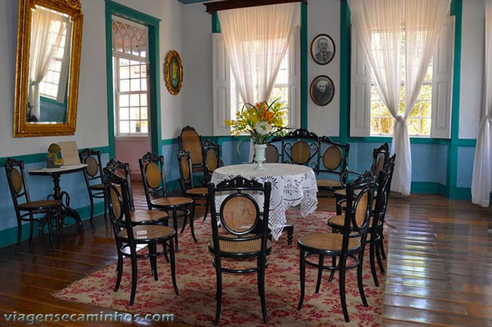
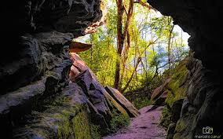

Pontos Turísticos

Museu Histórico
Gravuras e peças raras do Cerco da Lapa.

Theatro São João
Um dos teatros mais antigos do Brasil.

Gruta do Monge
Local religioso e turístico muito visitado.
A Lapa é uma das cidades mais antigas do Paraná, a 70 km da capital, na região dos Campos Gerais. O município, que retrata o Brasil do século XIX, teve sua origem com a passada dos tropeiros na região, os quais foram muito importantes para a economia do país. Antes mesmo das construções de rodovias e ferrovias, além de serem transportadores, eram comerciantes. Essa época foi registrada por Poty Lazzaroto com o Monumento ao Tropeiro, no mural de entrada da cidade. No Centro Histórico, existem marcas nas ruas e residências do bairro que lembram um episódio da trajetória política brasileira: o Cerco da Lapa. Foi uma batalha que teve um papel importante na história do Brasil, a qual teve 26 dias de duração. A Lapa foi uma das responsáveis pelo fim da Revolução Federalista, em 1894. A missão dos lapeanos foi frear o avanço dos sulistas maragatos, comandados pelo general Gumercindo Saraiva, que já haviam tomado Curitiba. O exército local era formado, em sua maioria, por civis. A organização dos pica-paus garantiu a vitória sobre os Maragatos. A principal atividade econômica da Lapa é a agropecuária. Cerca de 60% da população vive no meio urbano. Por conta da cultura e paisagens deslumbrantes, o turismo histórico, religioso e rural tem grande potencial. O município é reconhecido pela preservação arquitetônica, que serve de cenário para uma volta ao passado. É uma cidade tranquila, cheia de histórias para contar. Surpreenda-se!

Gravuras e peças raras do Cerco da Lapa.
Um dos teatros mais antigos do Brasil.

Local religioso e turístico muito visitado.
Departamento Municipal de Turismo
Endereço: Av. Caetano Munhoz da Rocha, 230-Lapa, Paraná
Telefone: (41) 41-3547-8021
E-mail: turismo.lapa@gmail.com
Terça a domingo, das 09h às 12h e das 13h30 às 17h .
(fechado na segunda para manutenção)